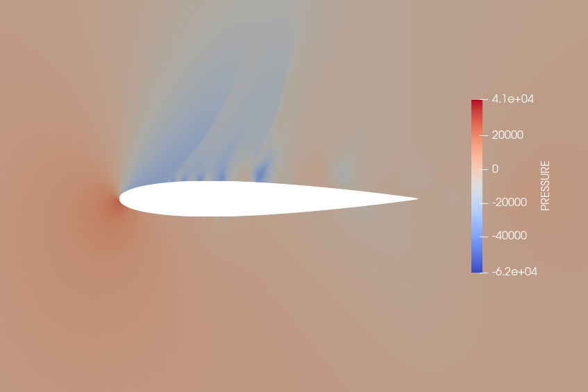

Research > Computational Study of Transonic Buffet
Computational Study of Transonic Buffet
Aeroelasticity Research Group
September 2021 - present

Figure 1: Snapshot of airfoil from CFD simulation.
Background and Research Goals
Transonic buffet is a dynamic fluid instability which,
for sufficiently high Mach numbers and angles of attack,
produces a limit cycle oscillation in the coefficient of lift.
This limit cycle generates dynamic loads on the aircraft which
constrain the flight envelope. The goal of this research is
to better understand the flow conditions and modeling parameters
which lead to buffet onset using computational fluid dynamics (CFD).
In particular, I am interested in capturing sustained buffet in the
transonic range by directly solving the Navier-Stokes equations
without a turbulence model. This research is
conducted at Duke Univeristy as part of the
Aeroelasticity Group.
Summary of Work
For a summary of work conducted between September 2021 and December 2021 as part of an independent study, see the memo below or click here to open the document in a new tab.